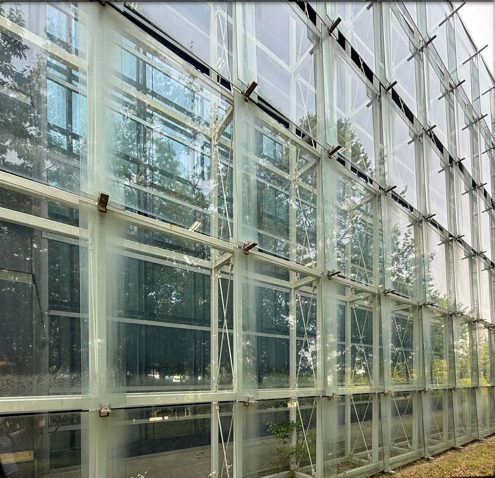

유리
1) 유리는 주로 투명성, 빛 투과성, 미적인 요소 때문에 선택
2) 대표적인 유리의 종류는 강화유리, 복층유리, 로이유리
1) 유리는 주로 투명성, 빛 투과성, 미적인 요소 때문에 선택
2) 대표적인 유리의 종류는 강화유리, 복층유리, 로이유리
1) 철은 주로 내구성과 모던한 느낌을 주기 위해 사용
2) 부식에 강한 스테인리스 스틸이나 내후성 강판 등이 마감재로 주로 사용됨
1) 돌은 주로 강도와 내구성, 중후한 느낌을 주기 위해 사용
2) 주로 사용되는 석재는 화강암, 대리석 등이며 구조나 마감 재료로 쓰임